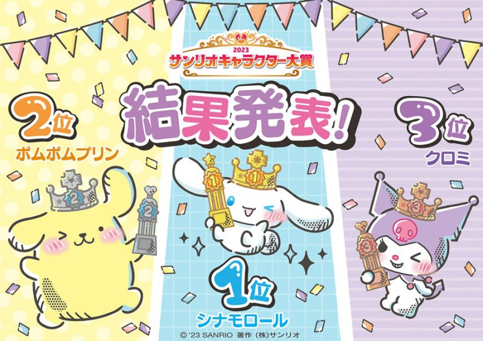

ความนิยม
10 อันดับตัวละครยอดนิยมของ Sanrio
อันดับที่ 10 : Bad Badtz-Maru (1,457,693 คะแนน)
อันดับที่ 9 : Tuxedo Sam (1,513,085 คะแนน)
อันดับที่ 8 : Little Twin Stars (1,518,114 คะแนน)
อันดับที่ 7 : Hangyodon (1,839,694 คะแนน)
อันดับที่ 6 : My Melody (2,264,895 คะแนน)
อันดับที่ 5 : Hello Kitty (2,496,850 คะแนน)
อันดับที่ 4 : Pochacco (3,200,540 คะแนน)
อันดับที่ 3 : Kuromi (3,566,050 คะแนน)
อันดับที่ 2 : Pompompurin (3,695,478 คะแนน)
อันดับที่ 1 : Cinnamoroll (4,376,064 คะแนน)
